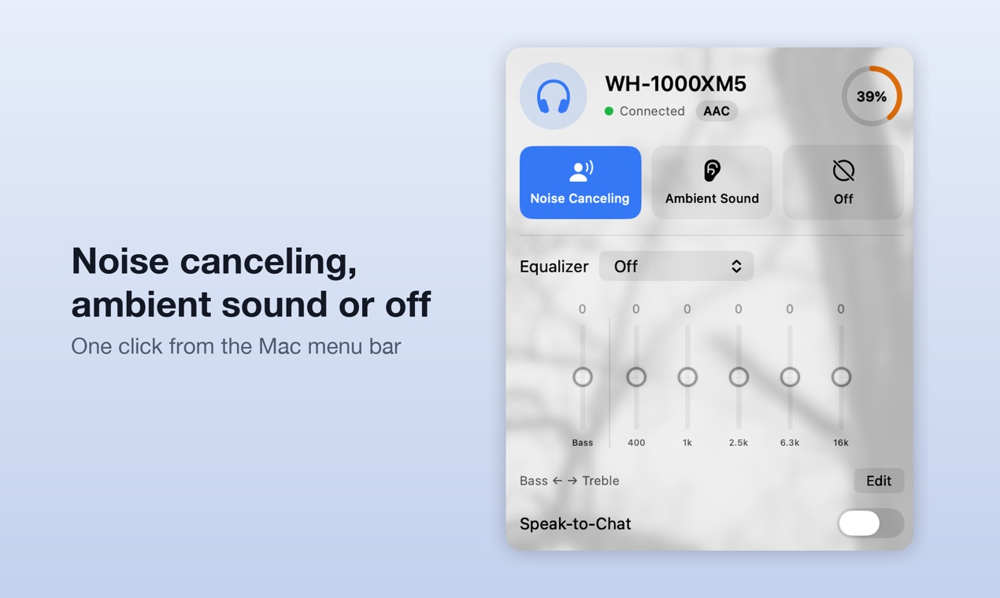
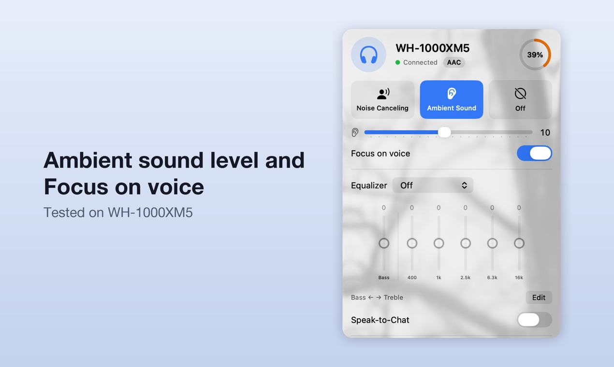
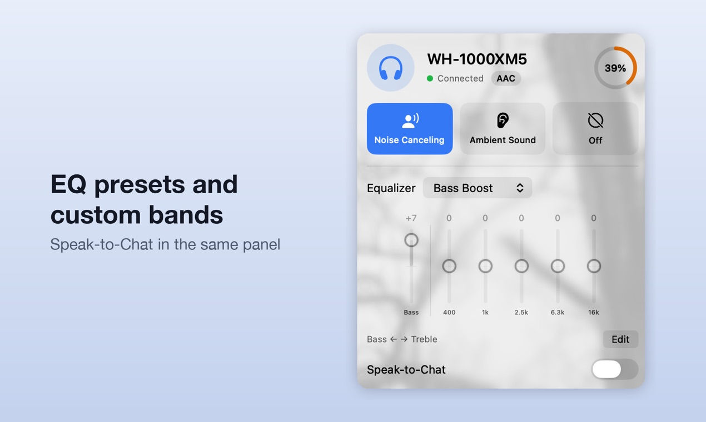

Basın kitiPress kit
Kulaklık Kontrol, Sony kulaklığınızın gürültü engelleme, ortam sesi, ekolayzer ve çoklu cihaz ayarlarını Mac menü çubuğuna getirir.
Headphone Control puts noise canceling, ambient sound, EQ and multipoint settings for Sony headphones in your Mac's menu bar.
Kiti indir (ZIP)Download kit (ZIP)Simge, 3 gerçek ekran görüntüsü, 3 tanıtım görseli, kısa görsel tur ve ürün bilgileri.
Icon, 3 real screenshots, 3 product images, a short screenshot tour and product facts.
Ürün bilgileriProduct facts
- AdName
- Headphone Control (Kulaklık Kontrol)
- GeliştiriciDeveloper
- Rüzgar Kurt
- PlatformPlatform
- macOS 14+
- ÜcretPrice
- Ücretsiz. TestFlight beta; App Store sürümü de ücretsiz olacak.Free. TestFlight beta; the App Store release will also be free.
- Test durumuHardware testing
- Yalnızca Sony WH-1000XM5 ile test edildi. Diğer modeller protokolden uygulandı, gerçek cihazda henüz denenmedi.Tested only on Sony WH-1000XM5. Other models are implemented from the protocol and still need real hardware testing.
- Kaynak kodSource
- Kapalı kaynakClosed source
- İletişimContact
- ruzgarnos@gmail.com
Profiller ve otomatik kurallar, arama sırasında veya seçtiğiniz uygulama açıkken kulaklık ayarlarını değiştirebilir. Uygulamada widget, Kestirmeler eylemleri ve klavye kısayolları da bulunur. Ayarlar kulaklığa Bluetooth üzerinden gönderilir; uygulama hesap gerektirmez ve analiz verisi toplamaz.
Profiles and automatic rules can switch headphone settings during calls or while an app you choose is open. The app also includes widgets, Shortcuts actions and keyboard shortcuts. Settings are sent directly over Bluetooth; no account is required and the app collects no analytics.
- TestFlight beta
- Tam demo (YouTube)Full demo (YouTube)
- XM5 Mac rehberi (İngilizce)WH-1000XM5 Mac setup guide
- XM4, XM5 & XM6 Mac rehberi (İngilizce)XM4, XM5 & XM6 multipoint guide
- XM5 Zoom/Teams çağrı rehberi (İngilizce)XM5 on Zoom & Teams calls guide
- Karşılaştırma (İngilizce)Compare Mac apps
- Model uyumluluğuModel compatibility
Tanıtım görselleriProduct images






Tek tek indirIndividual downloads
- Uygulama simgesiApp icon
- Gürültü kontrolü ekranıNoise control screenshot
- Ortam sesi ekranıAmbient sound screenshot
- Ekolayzer ekranıEQ screenshot
- Beta test çağrısı kartı (1200x630)Beta tester call card (1200x630)
- Link önizleme görseliSocial preview image
- Görsel tur (MP4)Screenshot tour (MP4)
- Görsel tur (GIF)Screenshot tour (GIF)
- Ürün bilgileri (TXT)Product facts (TXT)


Görselleri uygulama hakkında yazarken kullanabilirsiniz. Arayüzü veya uyumluluk durumunu yanıltacak şekilde değiştirmeyin. Sony ile bağlantımız yoktur.
You may use these images when covering the app. Please keep the UI and hardware testing status accurate. This is an independent app, not affiliated with Sony.